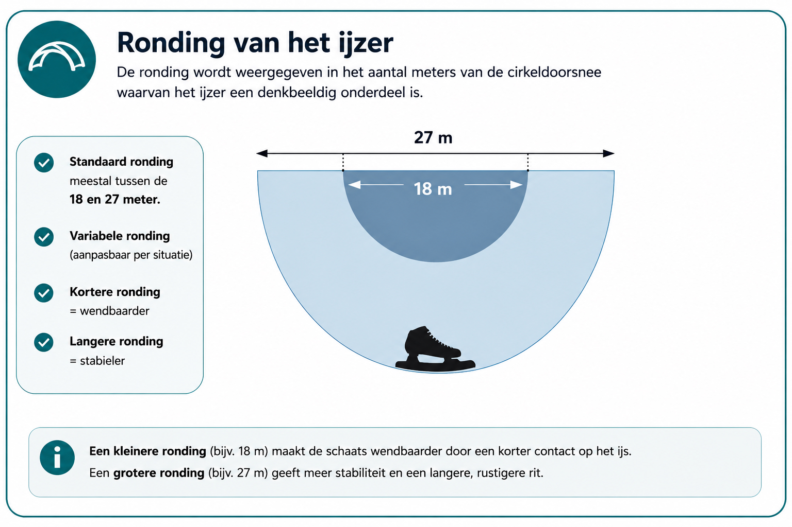

18 meter. 21 meter. 24 meter. 27 meter. Wie zich iets meer in schaatsmateriaal verdiept, komt deze getallen vroeg of laat tegen.
Maar wat betekenen ze eigenlijk? En misschien belangrijker: welke ronding moet jij kiezen?
Het eerste dat je moet weten is dat er geen ronding bestaat die automatisch voor iedere schaatser de beste is. De ronding moet passen bij het materiaal, de schaatser en de manier waarop ermee wordt gereden.
Wat is de ronding van een schaats?
Een schaatsijzer lijkt op het eerste gezicht recht. Maar over de lengte zit er een heel lichte kromming in.
Die kromming kun je beschrijven alsof het ijzer een klein deel vormt van een denkbeeldige cirkel. De straal van die cirkel noemen we de radius of ronding.
Bij langebaanschaatsen komen bijvoorbeeld rondingen binnen grofweg 17 tot 27 meter voor; Zandstra levert voor zijn radiusmachine templates binnen dat bereik. (Zandstra Sport)

Wat betekent 21 meter?
Stel dat je een ronding van 21 meter hebt. Dan is de kromming van je ijzer gebaseerd op een denkbeeldige cirkel met een straal van 21 meter.
Je hoeft die geometrie tijdens het schaatsen natuurlijk niet uit te rekenen. Belangrijker is het principe: een kleiner getal betekent een rondere kromming, een groter getal betekent een vlakkere kromming.
Dus: 18 meter is ronder dan 21 meter. 21 meter is ronder dan 24 meter. 24 meter is ronder dan 27 meter.
Wat merk je van een kleinere ronding?
Een relatief kleinere radius geeft het ijzer meer kromming. In algemene zin kan dat het sturen en draaien gemakkelijker laten aanvoelen.
Maar er is een keerzijde. Wanneer je te rond gaat voor jouw materiaal en manier van schaatsen, kan de schaats onrustiger voelen en heb je minder lengtegevoel in je glijfase.
“Kleiner stuurt makkelijker” is niet hetzelfde als “kleiner is beter”.
Wat merk je van een grotere ronding?
Een grotere radius betekent een vlakker ijzer. Dat kan meer lengte en rust geven in de schaats.
Daar tegenover staat dat een zeer vlakke ronding ook minder makkelijk kan insturen. Ook hier geldt dus: meer is niet automatisch beter.
18 meter: voor wie?
Een radius rond 18 meter zit aan de rondere kant van wat bij langebaanschaatsen gebruikt kan worden. Zandstra biedt voor langebaanmateriaal onder andere templates van 17, 18 en 19 meter. (Zandstra Sport)
Een rondere schaats kan een levendiger stuurgevoel geven. Maar ik zou nooit op basis van alleen de zin “Je wilt makkelijk de bocht door” automatisch 18 meter adviseren.
Daarvoor wil je ook kijken naar techniek, schaatslengte, gewicht, materiaal en wat iemand gewend is.
21 meter: een bekende tussenstap
21 meter ligt verder richting het midden van het langebaanbereik. Voor sommige schaatsers kan dat een prettige combinatie geven tussen sturen en rust.
Maar ook 21 meter is geen universele standaard die iedereen automatisch goed vindt. Een schaatser die jarenlang op een andere ronding rijdt kan een verandering van enkele meters behoorlijk goed voelen.
24 meter: meer richting vlak
Bij 24 meter wordt het ijzer relatief vlakker. Dat kan interessant zijn voor iemand die meer rust en lengte zoekt.
Maar wanneer de ronding te vlak wordt voor de betreffende schaatser kan het juist lastiger worden om het materiaal gemakkelijk te laten sturen.
27 meter: vlakker en ook te vinden bij tourschaatsen
27 meter zit nog verder richting vlak. Een interessant voorbeeld is dat Zandstra een Nordic Blade aanbiedt met een radius van 27 meter voor tourschaatsen op onder andere bevroren meren en kanalen. (Zandstra Sport)
Dat betekent overigens niet dat iedere tourschaatser dus automatisch 27 meter moet hebben. Nordic-/langlaufschaatsen hebben hun eigen geometrie, lengte en toepassing.
Vergelijk daarom nooit alleen het getal zonder te kijken naar het hele systeem. Meer over die verschillen lees je in Langlaufschaatsen versus noren op natuurijs.
Waarom lichaamsgewicht ertoe doet
Hier wordt ronding interessanter. De radius die op de werkbank gemeten wordt is niet exact hetzelfde als wat het ijzer onder belasting tijdens het schaatsen doet. Een ijzer vervormt namelijk onder druk.
Specialist Hans Gijsen laat in een technische uitleg zien dat lichaamsgewicht en de ondersteuning van het ijzer de effectieve ronding tijdens het rijden sterk kunnen beïnvloeden. Een op 23 meter gemeten ijzer gedraagt zich onder belasting dus niet simpelweg de hele schaatsslag als een starre 23-meterboog. (cadomotus.com)
Daarom vind ik het te simpel om te zeggen: “Je weegt zoveel kilo, dus je moet exact deze ronding hebben.” Gewicht is een factor. Maar niet de enige.
Ook de lengte van de schaats speelt mee
Een lang ijzer en een korter ijzer gedragen zich niet precies hetzelfde. De afstand tussen de steunpunten en de stijfheid van het materiaal beïnvloeden wat er gebeurt wanneer je druk opbouwt. Ook dat wordt in technische analyses van de ronding beschreven. (cadomotus.com)
Je moet daarom altijd kijken naar de combinatie:
- schaatser
- schoen
- ijzer
- lengte
- gewicht
- techniek
- toepassing
Waarom je oude ronding belangrijk is
Stel: je rijdt al jaren prettig. Dan zou ik niet zomaar een compleet andere ronding kiezen omdat iemand op internet zegt dat 24 meter sneller is.
Je lichaam heeft zich aangepast aan het materiaal dat je kent. Een andere ronding kan daardoor meteen vreemd voelen.
Dat betekent niet dat verandering verkeerd is. Maar verander bewust.
Wanneer zou ik de ronding laten controleren?
Bijvoorbeeld wanneer:
- links en rechts verschillend voelen
- de schaats opvallend onrustig stuurt
- je niet weet welke ronding erop zit
- je tweedehands schaatsen hebt gekocht
- de ijzers al vaak geslepen of bewerkt zijn
- je overstapt naar ander materiaal
- je voortdurend tegen hetzelfde materiaalgevoel aanloopt
Slijpen en ronding zijn niet hetzelfde
Dit wordt vaak door elkaar gehaald. Slijpen gaat over de scherpe kanten van het ijzer. Ronding gaat over het lengteprofiel van het ijzer.
Je kunt dus scherpe schaatsen hebben met een ronding die niet prettig bij je past. En je kunt een perfecte ronding hebben terwijl de kanten bot zijn.
Bij Novakse kun je daarom ook apart kiezen voor handmatig slijpen of ronding plus slijpen. Hoe vaak dat nodig is, lees je in Hoe vaak moet je je schaatsen laten slijpen?
Kan ronding veranderen door slijpen?
Ja, zeker wanneer er gedurende langere tijd niet consequent wordt gewerkt. Daarom is nauwkeurig slijpen belangrijk.
Het is niet alleen de bedoeling dat een ijzer vandaag scherp wordt. Je wilt ook voorkomen dat je door allerlei kleine slijpverschillen langzaam een ongewenst profiel creëert.
Meetapparatuur is ook niet magisch
Zelfs het meten van een ronding vraagt enige nuance. Gijsen wijst erop dat kleine meetafwijkingen al een verschil van ongeveer een meter in de gemeten radius kunnen geven. Zo’n meetapparaat is daardoor vooral waardevol wanneer je begrijpt wat je meet en hoe je het resultaat moet interpreteren. (cadomotus.com)
Het getal alleen vertelt dus niet het hele verhaal.
Welke ronding adviseert Novakse?
Ik zou niet vooraf online zeggen: 18 meter is voor beginners, 21 meter is voor gevorderden, 24 meter is voor zware schaatsers, 27 meter is voor tourschaatsers.
Dat klinkt lekker eenvoudig, maar de praktijk is ingewikkelder. Ik kijk liever naar:
- waarop je nu rijdt
- wat je prettig vindt
- waar je last van hebt
- welk materiaal je gebruikt
- hoe je schaatst
- waarvoor je de schaats gebruikt
Pas daarna heeft een concreet advies zin.
Wanneer hoort skatefitting erbij?
Wanneer het probleem niet alleen in de ronding zit. Als jij bijvoorbeeld het gevoel hebt dat je steeds naar binnen valt, kan de positie van het ijzer onder de schoen ook een rol spelen.
Dan heeft alleen een nieuwe ronding slijpen weinig zin. In zo’n situatie kan skatefitting interessanter zijn. Daarbij kijken we naar hoe de schaats daadwerkelijk onder je voet staat en beoordelen we dat vervolgens ook op het ijs.
Lees ook: Wat is skatefitting en heb je het nodig?
Tot slot
18, 21, 24 of 27 meter? Zie die getallen niet als vier niveaus waarbij één automatisch “de beste” is.
Een kleinere radius geeft meer kromming. Een grotere radius is vlakker. Maar welke ronding prettig werkt ontstaat uit de combinatie van jouw lichaam, techniek, ijzer en toepassing.
Daarom meet ik liever eerst en verander ik daarna alleen wat daar daadwerkelijk aanleiding toe geeft.
Een goede ronding is niet de ronding die op papier het indrukwekkendst klinkt. Het is de ronding waarop jij prettig schaatst.